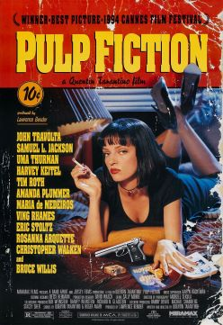
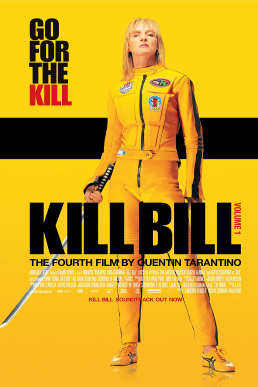

Reparto Estelar: Harvey Keitel, Tim Roth, Chris Penn, Steve Buscemi, Lawrence Tierney, Michael
Madsen
Sinopsis: Seis criminales profesionales son contratados para robar en un almacén de diamantes,
pero la policía aparece inesperadamente en el momento del atraco. Algunos miembros de la banda mueren en
el enfrentamiento y otros logran huir.
Pulp Fiction

Fecha de estreno: 14/Oct/1994
Reparto Estelar: John Travolta, Samuel L. Jackson, Uma Thurman, Harvey Keitel, Tim Roth, Amanda
Plummer, Maria de Medeiros, Ving Rhames, Eric Stoltz, Rosanna Arquette, Christopher Walken, Bruce Willis
Sinopsis: Historias de dos matones, un boxeador y una pareja de atracadores de poca monta
envueltos en una violencia espectacular e irónica.
Kill Bill: Vol. 1

Fecha de estreno: 10/Oct/2003
Reparto Estelar: Uma Thurman, Lucy Liu, Vivica A. Fox, Michael Madsen, Daryl Hannah, David
Carradine, Sonny Chiba, Julie Dreyfus, Chiaki Kuriyama
Sinopsis: Mamba Negra es una asesina que, el día de su boda, es atacada por los miembros de la
banda de su jefe, Bill. Sin embargo consigue sobrevivir, aunque queda en coma. Cinco años después
despierta, con un deseo de venganza.
Sinopsis: Hollywood, años 60. La estrella de un western televisivo, Rick Dalton, intenta
amoldarse a los cambios del medio al mismo tiempo que su doble. La vida de Dalton está ligada
completamente a Hollywood, y es vecino de la joven y prometedora actriz y modelo Sharon Tate que acaba
de casarse con el prestigioso director Roman Polanski.